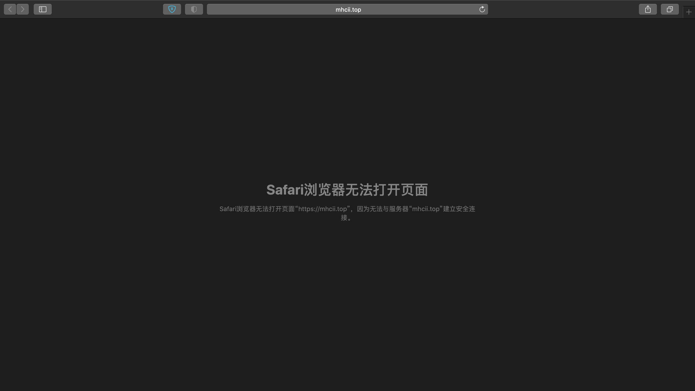
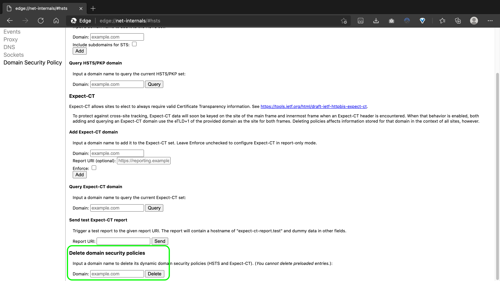

解决浏览器强行跳转HTTPS
当网站曾经支持https访问，之后由于某些特殊原因只支持http访问时（没错，就是我的网站），浏览器会默认跳转https而导致无法连接，这个时候无论是使用http://mhcii.top还是通过mhcii.top访问都会默认跳转到https://mhcii.top

Safari（Mac）
1.完全退出Safari
2.打开终端，输入下面的命令
rm ~/Library/Cookies/HSTS.plist
3.重启一下电脑
Safari（iPhone、iPad）
设置-->Safari浏览器-->清除历史记录与网站数据
Chrome/Edge
1.在地址栏输入chrome://net-internals/#hsts
2.在打开的界面中滑至最后

3.在 Delete domain security policies 中输入项目的域名,并 Delete 删除
4.清除浏览器历史记录（非必要，在上述步骤无效时可以试试）
🔗参考：